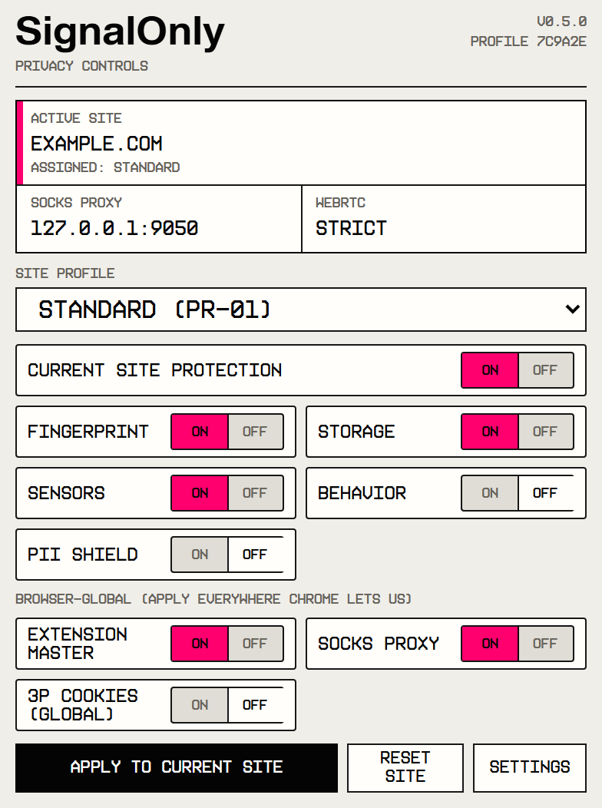
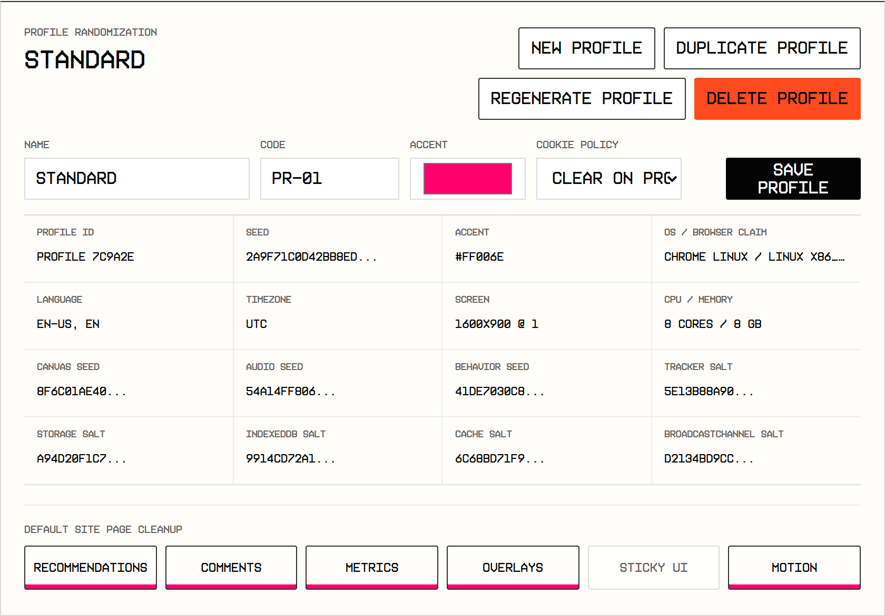

Popup
The popup image is rendered from popup/popup.html with the current popup stylesheet and a mocked extension state.
SO / MV3 / LOCAL EXTENSION
Privacy profiles, routing controls, and browser-surface reduction in one local extension.


Preview source
The popup image is rendered from popup/popup.html with the current popup stylesheet and a mocked extension state.
The profile panel is rendered from options/options.html, using the actual settings layout, profile list, randomization plate, salts, and controls.
The banner composes the real popup and settings captures into a compact product card for GitHub.
Use